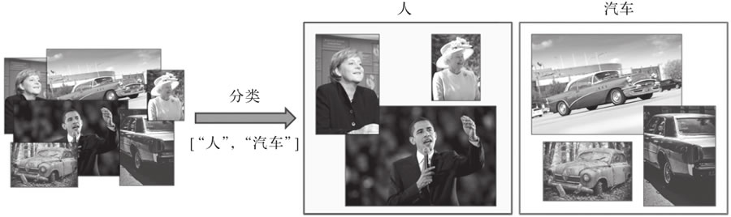
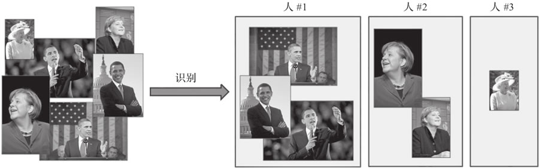
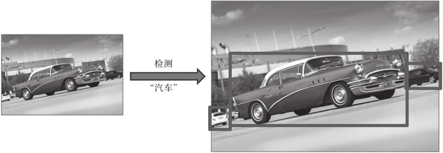
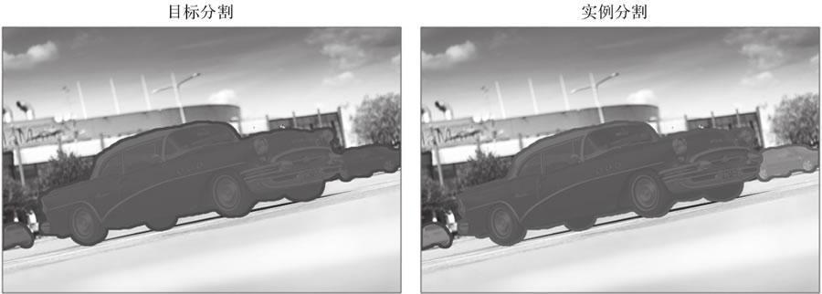
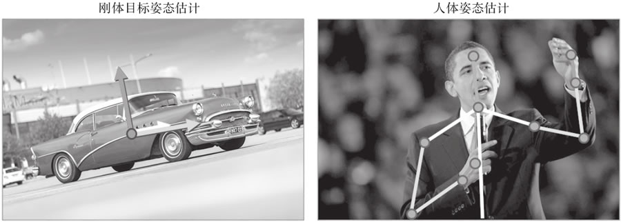
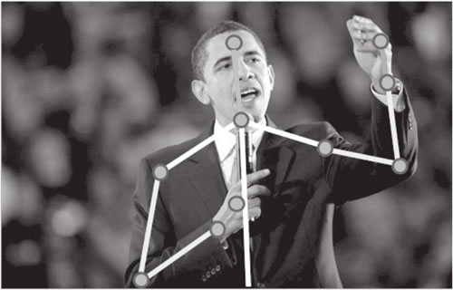
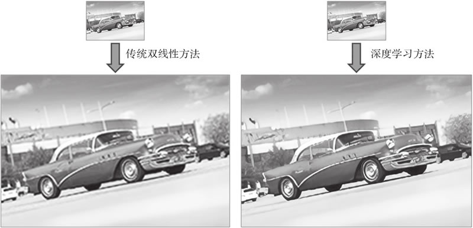
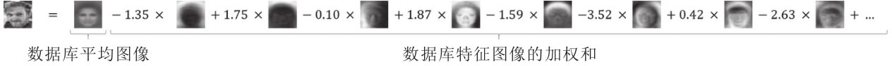
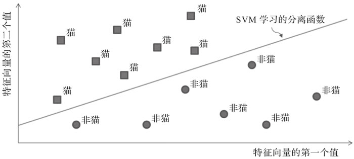

首页 > 编程笔记
计算机视觉介绍（非常详细）
计算机视觉如今应用广泛、无处不在，以至于不同的专家对它的定义可能会有很大的不同。在本节中，我们将全面介绍计算机视觉，突出它的应用领域和面临的挑战。
从本质上讲，计算机视觉可以概括为从数字图像中自动提取信息。
当涉及视觉时，我们的大脑会创造奇迹。我们能够破译眼睛不断捕捉到的视觉刺激，能够立即分辨出一个物体与另一个物体的区别，能够认出只见过一面的人的脸，等等，这些能力都是令人难以置信的。对于计算机来说，图像只是像素块，是红绿蓝值的矩阵，没有其他意义。
计算机视觉的目标是教会计算机如何理解这些像素，就像人类（和其他生物）那样，甚至比人类做得更好。的确，自深度学习兴起以来，计算机视觉已经有了长足的进步，它已经开始在一些任务（比如人脸识别或手写文字识别）上表现出了超越人类的性能。
在大型 IT 公司的推动下，研究社区变得异常活跃，数据和视觉传感器的可用性也越来越高，越来越多雄心勃勃的问题正在被解决，比如基于视觉的自动驾驶导航、基于内容的图像和视频检索、自动注释和增强等。对于专家和新手来说，这确实是一个激动人心的时代。
早在 2012 年，它已经作为深度卷积神经网络应用于计算机视觉的第一个成功案例而闻名。自那时起，这个领域就开始飞速发展，目前已经在各类特定用例中都表现出了超越人类能力的性能（一个著名的例子是犬种的分类——深度学习方法在识别人类“最好的朋友”的区分特征方面非常有效）。
常见的应用包括文本数字化（使用字符识别）和图像数据库的自动注释。
例如，可以配置目标分类工具来返回包含人脸的图像，而目标识别方法则聚焦于人脸的特征来识别某个人，并在其他图像中识别他们（即在所有图像中识别每个人脸，如图 2 所示）。
因此，可以将目标识别看作对数据集进行聚类的过程，通常会用到一些数据集分析概念。
检测通常是进一步计算的第一步，提供更小的图像块以分别进行分析（例如，为面部识别剪裁图像中某人的面部，或为增强现实应用提供一个围绕对象的边界框来评估其姿态），如图 3 所示。
目标分割和实例分割如图 4 所示。
在图 4 中，目标分割算法为所有属于汽车类的像素返回一个掩膜，而实例分割算法为它识别的每个汽车实例返回一个不同的掩膜。这对于机器人或智能汽车来说是一项关键任务，这样它们就可以理解周围的环境（例如，识别车辆前方的所有元素）。它也可用于医学图像，在医学扫描中，精确分割不同的组织可以辅助更快地诊断和更便捷地可视化（比如给每个器官赋予不同的颜色或清除视图中的干扰）。
对于非刚体元素，姿态估计也可以表示其子部件相对位置的估计。更具体地说，当将人视为非刚性目标时，典型的应用是对人的姿势（站立、坐着、跑步等）的识别或手语理解。这些不同的情况如图 5 所示。
在这两种情况下，对于全部或部分元素，算法的任务是根据它们在图像中的 2D 表示，评估它们在 3D 世界中相对于摄像机的实际位置和方向。
通过对每一帧进行检测和识别，可以逐帧跟踪。然而，使用以前的结果来对实例的运动进行建模以部分预测它们在未来帧中的位置会更加有效。因此，运动连续性是这里的一个关键词，尽管它并不总是成立（例如对于快速移动的对象）。
识别动作意味着在预定义的集合中识别特定的动作（例如，人类的动作——跳舞、游泳、画正方形或画圆）。应用范围包括监视（如检测异常或可疑的行为）和人机交互（如手势控制设备）等。
既然目标识别可以分为目标分类、检测、分割等，那么动作识别同样如此（动作分类、检测等）。
越来越多的基础图像处理工具（如用于图像去噪的低通滤波器）正在被更智能的方法所取代，这些方法能够利用图像内容的先验知识来提高其视觉质量。
例如，如果一个方法知道了一只鸟通常是什么样子的，它就可以根据这些知识用鸟类图像中的相干像素代替噪声像素。这个概念适用于任何类型的图像恢复，无论是去噪、去模糊，还是分辨率增强（超分辨率，如图 7 所示）等。
一些摄影或艺术应用程序也使用了内容感知算法，比如智能人像或智能美容模式，旨在增强模特的一些特征，再比如智能删除/编辑工具，可以用一些连贯的背景来替代不需要的元素以去除它们。
一个简单的例子是基于人类视觉的立体匹配。它是在一个场景的两个不同视点的图像中寻找对应元素的过程，从而得出每个可视化元素之间的距离。更先进的方法是获取多个图像并将其内容匹配在一起，从而获得目标场景的三维模型。这可以应用于物体、人、建筑物等的三维扫描。
马文·明斯基（Marvin Minsky）是最早提出基于感知构建人工智能系统的方法的研究人员之一（见“Steps toward artificial intelligence”，Proceedings of the IRE，1961）。他认为，利用诸如模式识别、学习、规划和归纳等较基础的功能，有可能制造出能够解决各种各样问题的机器。然而，这一理论直到20世纪80年代才得到适当的探索。
在1984年的“Locomotion，Vision，and Intelligence”一文中，汉斯·莫拉韦克（Hans Moravec）指出，神经系统在进化的过程中逐步发展到能够处理感知任务（人类大脑中超过30%的部分用于处理视觉任务！）。
正如他所指出的，即使计算机在算术方面表现很出色，它们也无法与我们的感知能力竞争。从这个意义上，利用计算机编程来解决纯粹的智力任务（例如下棋）并不一定有助于开发一般意义上的智能系统或与人类智能相关的智能系统。
在计算机视觉中，特征是从与当前任务相关的数据中提取出来的一段信息（通常用数学表示为一个一维或二维向量）。特征可以是图像中的一些关键点、特定的边缘、可识别的色块等。它们应当很容易从新的图像中获得，并包含进一步识别图像所需的信息。
过去，研究人员常常提出越来越复杂的特征。边缘和线的提取首先用于场景的基本几何理解或字符识别。然后，纹理和照明信息也被考虑在内，形成了早期的对象分类器。
20 世纪 90 年代，基于统计分析（如主成分分析（Principal Component Analysis，PCA））的特征，首次成功地应用于复杂的识别问题，如人脸分类。
一个经典的例子是马修·特克（Matthew Turk）和亚历克斯·彭特兰（Alex Pentland）提出的特征脸（Eigenface）算法（Eigenfaces for Recognition，MIT Press，1991）。在给定人脸图像数据库的情况下，通过 PCA 可以计算人脸图像的均值和特征向量/图像（也称为特征量/图）。从理论上讲，这一组特征图像可以被线性地组合起来，以重建原始数据集的人脸或实现更多处理。
换句话说，每个人脸图像都可以通过特征图像的加权来近似（参见图 8）。这意味着可以简单地通过每个特征图像的重建权值列表来定义特定的人脸。因此，对一幅新的人脸图像进行分类，只需将其分解为特征图像，获得其权值向量，并与已知人脸的向量进行比较：
另一种出现于 20 世纪 90 年代末并彻底改变了该领域的方法是尺度不变特征变换（Scale Invariant Feature Transform，SIFT）。正如其名称所表明的，这个方法由 David Lowe 提出（见论文“Distinctive Image Features from Scale-Invariant Keypoints”，Elsevier），它通过一组对尺度和方向变化具有鲁棒性的特征来表示可视对象。
简单地说，该方法在图像中寻找一些关键点（搜索其梯度中的不连续点），在每个关键点周围提取一个图块，并为每个关键点计算一个特征向量（例如，图块或其梯度中的值的直方图）。然后，可以使用图像的局部特征及其对应的关键点来匹配其他图像中的类似视觉元素。
在图 9 中，我们使用 OpenCV 将 SIFT 方法应用于图像（https://docs.opencv.org/3.1.0/da/df5/tutorial_py_sift_intro.html）。对于每一个局部化的关键点，圆的半径表示特征计算所考虑的图块的大小，直线表示特征的方向（即邻域梯度的主方向）。
图 9 从给定图像中提取的SIFT关键点（使用OpenCV）
随着时间的推移，研究人员逐渐开发出了更先进的算法——使用更具鲁棒性的算法提取关键点或者计算并结合有区别的特征——但是整个过程（从一张图像中提取特征，并将其与其他图像的特征进行比较）基本是相同的。
这就是机器学习的切入点。20 世纪 90 年代随着越来越多的研究人员试图解决图像分类问题，更多基于特征的统计方法开始出现。支持向量机（Support Vector Machine，SVM）由 Vladimir Vapnik 和 Corinna Cortes 标准化，长期以来是学习从复杂结构（如图像）到简单标签（如类）映射的默认解决方案。
给定一组图像特征及其二值标签（例如，猫或非猫，如图 10 所示），可以对 SVM 进行优化，使其能够根据提取的特征训练将一个类与另一个类分离的函数。一旦得到了这个函数，只需将它应用到未知图像的特征向量上，就可以将图像映射到这两个类中的一个（后来研究人员提出 SVM 也可以扩展到多个类）。
在图 10 中，我们训练 SVM 回归一个线性函数，让该函数根据从两类图像中提取的特征（在本例中，特征是个二值向量）将两个类分离开来。
还有许多其他机器学习算法在过去几年也被计算机视觉研究人员所采用，比如随机森林、词袋模型、贝叶斯模型，当然还有神经网络。
20 世纪 50 年代，Frank Rosenblatt 提出了感知机（perceptron），这是一种机器学习算法，灵感来自神经元和第一个神经网络的底层块。通过适当的学习过程，这种方法能够识别字母。然而，这种炒作是短暂的。
Marvin Minsky（人工智能之父之一）和 Seymor Papert 很快证明了感知机无法学习像 XOR 这样简单的函数（异或函数，给定两个二进制输入值，如果有且只有 1 个输入值为 1，则返回 1，否则返回 0）。在今天，这对我们来说是非常容易理解的——因为当时的感知机是用线性函数建模的，而XOR是非线性函数——但在当时，在很多年里它阻碍了研究人员做进一步的研究。
直到 20 世纪 70 年代末 80 年代初，神经网络才重新引起人们的注意。几篇研究论文介绍了如何使用相当简单的反向传播机制来训练具有多层感知机的神经网络，这个训练通过计算网络误差并通过各个感知机层进行反向传播来使用导数更新它们的参数。不久之后，第一个卷积神经网络（Convolutional Neural Network，CNN），即当前主流识别方法的鼻祖，被开发出来并应用于手写字符的识别，取得了一定的成功。
但是，这些方法计算量大，无法扩展应用到更大的问题。取而代之，研究人员采用了更轻量级的机器学习方法，如支持向量机，于是神经网络的应用又停滞了十几年。
那么，是什么让它们重新回到人们的视野并发展成了如今的深度学习呢？
互联网不仅是一场通信革命，它也深刻地改变了数据科学。通过将图片和内容上传到网上，科学家们分享图片和内容变得更加容易，并逐步导致了用于实验和基准测试的公共数据集的产生。
此外，不仅是研究人员，很快全世界的每个人都开始以指数级的速度在网上添加新的内容，共享图片、视频等。这开启了大数据和数据科学的黄金时代，而互联网就成了其中新的黄金国。
仅仅通过为不断在网上发表的内容添加索引，就可以了解到图像和视频数据集已经达到了之前从未想象过的大小，从 Caltech-101（1 万幅图片，由 Li Fei-Fei 等发布于 2003 年，Elsevier）到 ImageNet（1400 多万图片，由 Jia Deng 及其他人发布于 2009 年，IEEE）或 Youtube-8M（800 多万视频，由 Sami Abu-El-Haija 等发布于 2016 年，Google）。即使是公司和政府也很快认识到收集和发布数据集以促进其特定领域创新的众多优势（例如，英国政府发布的用于视频监控的 i-LIDS 数据集，以及由脸书和微软等赞助的用于图像字幕的 COCO 数据集）。
随着如此多的可用数据覆盖了如此多的用例，打开了新的大门（数据饥渴类型的算法，即需要大量训练样本才能成功收敛的算法终于可以成功应用了），也提出了新的挑战（例如，如何有效地处理所有这些信息）。
幸运的是，由于互联网的蓬勃发展，计算能力也随之蓬勃发展。硬件变得越来越便宜，速度也越来越快，这似乎遵循了著名的摩尔定律（即处理器速度每两年将会翻一番——这是近 40 年来的真理，尽管现在观察到的增长有所减速）。随着计算机运行速度的加快，它们的设计也变得更加适合计算机视觉。这要感谢电子游戏。
图形处理单元（Graphics Processing Unit，GPU）是一种计算机组件，即一种专门用来处理运行 3D 游戏所需运算的芯片。GPU 被优化用来生成或处理图像，并行化这些繁重的矩阵运算。尽管第一个 GPU 是在 20 世纪 80 年代构想出来的，但它们确是在 2000 年才变得便宜和流行的。
2007 年，主要的 GPU 设计公司之一英伟达（NVIDIA）发布了第一个 CUDA 版本，这是一种允许开发者直接为兼容的 GPU 编程的编程语言。不久之后，类似的语言 OpenCL 也出现了。有了这些新工具，人们开始利用 GPU 的力量来完成新的任务，比如机器学习和计算机视觉。
事实上，“深度学习”这个术语早在 20 世纪 80 年代就已经被创造出来了，那时神经网络第一次以两三层神经元堆叠起来的形式重新出现。
与早期的、更简单的解决方案不同，深度学习重组了更深层次的神经网络，即具有多个隐藏层的网络——在输入和输出之间设置了额外的层。每一层处理它的输入并将结果传递给下一层，所有这些层都经过训练以提取越来越抽象的信息。
例如，神经网络的第一层将学会对图像的基本特征（如边缘、线条或颜色梯度）做出反应；下一层将学习使用这些线索来提取更高级的特征；以此类推，直到最后一层，该层将推断出所需的输出（例如预测的类或检测结果）。
然而，当 Geoff Hinton 和他的同事提出了一个有效的解决方案来训练这些更深层次的模型，每次一层，直至达到期望的深度时，深度学习才真正开始被使用。
随着神经网络的研究再次回到正轨，深度学习技术开始蓬勃发展，直到 2012 年取得重大突破才最终让它真正崭露头角。自从 ImageNet 发布以来，每年都会组织一场竞赛（ImageNet 大型视觉识别挑战（ImageNet Large Scale Visual Recognition Challenge，ILSVRC），http://image-net.org/challenges/LSVRC/），研究人员可以提交他们最新的分类算法，并将它们在 ImageNet 上的性能表现与其他算法进行比较。2010 年和 2011 年的获胜方案分类误差分别为 28% 和 26%，采用了 SIFT 特征和 SVM 等传统概念。然后到了 2012 年，一个新的研究团队将识别误差降低到了惊人的 16%，将其他所有参赛者远远甩在了后面。
Alex Krizhevsky、Ilya Sutskever和Geoff Hinton 在他们描述这一成果的论文“Imagenet Classification with Deep Convolutional Neural Networks”（NIPS，2012）中提出了现代识别方法的基础。他们构想了一个 8 层的神经网络（后来命名为 AlexNet），包括几个卷积层和其他现代组件，如 dropout 和修正线性激活单元（Rectified Linear activation Unit，ReLU）。更重要的是，他们使用 CUDA 来实现他们的方法，这样它就可以在 GPU 上运行，最终使得在合理的时间内，在像 ImageNet 这么大的数据集上迭代完成深度神经网络训练成为可能。
同年，Google 演示了云计算的技术进步如何应用于计算机视觉。使用从 YouTube 视频中提取的 1000 万张随机图像数据集，教一个神经网络识别包含猫的图像，并将 1.6 万多台机器的训练过程并行化，最终将准确率提高了一倍。
由此开启了我们目前所处的深度学习时代。每个人都参与进来，提出了越来越深的模型、更先进的训练方案，以及更轻量级的适用便携设备的解决方案。这是一个令人兴奋的时代，因为深度学习解决方案变得越有效，就有越多的人试图将它们应用到新的应用和领域。
计算机视觉概述
计算机视觉很难定义，因为它处于几个研究和开发领域的交叉领域，比如计算机科学（算法、数据处理和图形）、物理学（光学和传感器）、数学（微积分和信息论）和生物学（视觉刺激和神经处理）。从本质上讲，计算机视觉可以概括为从数字图像中自动提取信息。
当涉及视觉时，我们的大脑会创造奇迹。我们能够破译眼睛不断捕捉到的视觉刺激，能够立即分辨出一个物体与另一个物体的区别，能够认出只见过一面的人的脸，等等，这些能力都是令人难以置信的。对于计算机来说，图像只是像素块，是红绿蓝值的矩阵，没有其他意义。
计算机视觉的目标是教会计算机如何理解这些像素，就像人类（和其他生物）那样，甚至比人类做得更好。的确，自深度学习兴起以来，计算机视觉已经有了长足的进步，它已经开始在一些任务（比如人脸识别或手写文字识别）上表现出了超越人类的性能。
在大型 IT 公司的推动下，研究社区变得异常活跃，数据和视觉传感器的可用性也越来越高，越来越多雄心勃勃的问题正在被解决，比如基于视觉的自动驾驶导航、基于内容的图像和视频检索、自动注释和增强等。对于专家和新手来说，这确实是一个激动人心的时代。
计算机视觉的主要任务和应用
每天都有基于计算机视觉的新产品出现（例如，工业控制系统、交互式智能手机应用程序或监控系统），它们涵盖了广泛的任务领域。1、内容识别
计算机视觉的一个核心目标是理解图像，也就是说，从像素中提取有意义的语义信息（比如图像中的对象及其位置和数量）。这个一般性问题可以分为几个子领域，大致包含目标分类、目标识别、目标检测和定位、目标和实例分割以及姿态估计。1) 目标分类
目标分类（或图像分类）是在预定义的集合中为图像分配适当的标签（或类别）的任务，如图 1 所示：

图 1 应用于图像集的人和汽车标签分类器示例
图 1 应用于图像集的人和汽车标签分类器示例
早在 2012 年，它已经作为深度卷积神经网络应用于计算机视觉的第一个成功案例而闻名。自那时起，这个领域就开始飞速发展，目前已经在各类特定用例中都表现出了超越人类能力的性能（一个著名的例子是犬种的分类——深度学习方法在识别人类“最好的朋友”的区分特征方面非常有效）。
常见的应用包括文本数字化（使用字符识别）和图像数据库的自动注释。
2) 目标识别
目标分类方法是从预定义的集合中分配标签，而目标识别（或实例分类）方法则学习去识别某一类的特定实例。例如，可以配置目标分类工具来返回包含人脸的图像，而目标识别方法则聚焦于人脸的特征来识别某个人，并在其他图像中识别他们（即在所有图像中识别每个人脸，如图 2 所示）。

图 2 应用于肖像的识别器示例
图 2 应用于肖像的识别器示例
因此，可以将目标识别看作对数据集进行聚类的过程，通常会用到一些数据集分析概念。
3) 目标检测和定位
另一项任务是检测图像中的特定元素。它通常应用于监控应用甚至先进的相机应用中的面部检测、医学上的癌细胞检测、工业厂房中受损部件的检测等。检测通常是进一步计算的第一步，提供更小的图像块以分别进行分析（例如，为面部识别剪裁图像中某人的面部，或为增强现实应用提供一个围绕对象的边界框来评估其姿态），如图 3 所示。

图 3 汽车检测器示例，它返回候选物的边界框
图 3 汽车检测器示例，它返回候选物的边界框
4) 目标和实例分割
分割可以看作一种更高级的检测类型。与简单地为识别的元素提供边界框不同，分割方法返回掩膜，用于标记属于特定类或某一类的特定实例的所有像素（参见图 4 ）。这使得任务变得更加复杂，实际上，这也是计算机视觉方面少数几个深度神经网络与人类表现仍相去甚远的领域之一（人类大脑在绘制视觉元素的精确边界或轮廓方面确实非常高效）。目标分割和实例分割如图 4 所示。

图 4 汽车的目标分割方法与实例分割方法结果对比
图 4 汽车的目标分割方法与实例分割方法结果对比
在图 4 中，目标分割算法为所有属于汽车类的像素返回一个掩膜，而实例分割算法为它识别的每个汽车实例返回一个不同的掩膜。这对于机器人或智能汽车来说是一项关键任务，这样它们就可以理解周围的环境（例如，识别车辆前方的所有元素）。它也可用于医学图像，在医学扫描中，精确分割不同的组织可以辅助更快地诊断和更便捷地可视化（比如给每个器官赋予不同的颜色或清除视图中的干扰）。
5) 姿态估计
根据目标任务的不同，姿态估计可能有不同的含义。对于刚体，姿态估计通常是指物体在三维空间中相对于摄像机的位置和方向的估计。这对机器人特别有用，这样它们就可以与环境进行交互（挑选对象、避免碰撞等）。它也经常被用在增强现实中，在物体上叠加 3D 信息。对于非刚体元素，姿态估计也可以表示其子部件相对位置的估计。更具体地说，当将人视为非刚性目标时，典型的应用是对人的姿势（站立、坐着、跑步等）的识别或手语理解。这些不同的情况如图 5 所示。

图 5 刚体和非刚体姿态估计示例
图 5 刚体和非刚体姿态估计示例
在这两种情况下，对于全部或部分元素，算法的任务是根据它们在图像中的 2D 表示，评估它们在 3D 世界中相对于摄像机的实际位置和方向。
2、视频分析
计算机视觉不仅适用于单个图像，也适用于视频。视频流有时需要逐帧分析，而有些任务要求你将图像序列作为一个整体来考虑其在时间上的一致性。1) 实例跟踪
一些关于视频流的任务可以通过单独研究每一帧来完成（无记忆地），但是更有效的方法要么考虑以前图像的推论来指导新图像的处理，要么将完整的图像序列作为预测的输入。跟踪，即在视频流中定位特定元素，就是这种任务的一个很好的例子。通过对每一帧进行检测和识别，可以逐帧跟踪。然而，使用以前的结果来对实例的运动进行建模以部分预测它们在未来帧中的位置会更加有效。因此，运动连续性是这里的一个关键词，尽管它并不总是成立（例如对于快速移动的对象）。
2) 动作识别
另一方面，动作识别则属于只能通过一系列图像来解决的任务。就像当单词被分开和无序时无法理解句子含义一样，如果不学习连续的图像序列，那么也不能识别动作（参见图 6 ）。

图 6 贝拉克·奥巴马是在挥手、指着什么人、驱赶蚊子，还是做别的什么？只有完整的帧序列才能帮助标记这个动作识别动作
图 6 贝拉克·奥巴马是在挥手、指着什么人、驱赶蚊子，还是做别的什么？只有完整的帧序列才能帮助标记这个动作识别动作
识别动作意味着在预定义的集合中识别特定的动作（例如，人类的动作——跳舞、游泳、画正方形或画圆）。应用范围包括监视（如检测异常或可疑的行为）和人机交互（如手势控制设备）等。
既然目标识别可以分为目标分类、检测、分割等，那么动作识别同样如此（动作分类、检测等）。
3) 运动估计
有些方法不试图识别移动的元素，而是专注于估算视频中捕获的实际速度或轨迹。相对于所表现的场景，评估相机本身的运动也是很常见的。运动估计在娱乐行业特别有用，例如，为了应用视觉效果或者在电视流（如体育广播）中覆盖 3D 信息而进行动作捕捉。3、图片内容感知
除了分析其内容外，计算机视觉方法也可以用来改善图像本身。越来越多的基础图像处理工具（如用于图像去噪的低通滤波器）正在被更智能的方法所取代，这些方法能够利用图像内容的先验知识来提高其视觉质量。
例如，如果一个方法知道了一只鸟通常是什么样子的，它就可以根据这些知识用鸟类图像中的相干像素代替噪声像素。这个概念适用于任何类型的图像恢复，无论是去噪、去模糊，还是分辨率增强（超分辨率，如图 7 所示）等。

图 7 图像超分辨率传统方法与深度学习方法的比较（注意在第二张图片中细节是多么清晰）
图 7 图像超分辨率传统方法与深度学习方法的比较（注意在第二张图片中细节是多么清晰）
一些摄影或艺术应用程序也使用了内容感知算法，比如智能人像或智能美容模式，旨在增强模特的一些特征，再比如智能删除/编辑工具，可以用一些连贯的背景来替代不需要的元素以去除它们。
4、场景重建
场景重建的任务是根据给定的一个或多个图像恢复场景的三维几何形状。一个简单的例子是基于人类视觉的立体匹配。它是在一个场景的两个不同视点的图像中寻找对应元素的过程，从而得出每个可视化元素之间的距离。更先进的方法是获取多个图像并将其内容匹配在一起，从而获得目标场景的三维模型。这可以应用于物体、人、建筑物等的三维扫描。
计算机视觉简史
为了更好地理解计算机视觉的现状和当前的挑战，建议快速地看一看它是如何诞生以及在过去的几十年里是如何发展的。1、迈出成功的第一步
科学家们一直梦想着研发包括视觉智能在内的人工智能技术。计算机视觉的起步就是由这个想法驱动的。1) 低估感知任务
在人工智能（Artificial Intelligence，AI）研究领域，计算机视觉作为一个专门的领域早在 20 世纪 60 年代就开始被研究人员所关注了。象征主义哲学认为下棋和其他纯粹的智力活动是人类智力的缩影，而这些研究人员深受象征主义哲学的影响，低估了低等动物功能（如感知能力）的复杂性。这些研究人员是如何相信他们能够通过 1966 年的一个夏季项目再现人类感知的呢？这是计算机视觉界的一个著名轶事。马文·明斯基（Marvin Minsky）是最早提出基于感知构建人工智能系统的方法的研究人员之一（见“Steps toward artificial intelligence”，Proceedings of the IRE，1961）。他认为，利用诸如模式识别、学习、规划和归纳等较基础的功能，有可能制造出能够解决各种各样问题的机器。然而，这一理论直到20世纪80年代才得到适当的探索。
在1984年的“Locomotion，Vision，and Intelligence”一文中，汉斯·莫拉韦克（Hans Moravec）指出，神经系统在进化的过程中逐步发展到能够处理感知任务（人类大脑中超过30%的部分用于处理视觉任务！）。
正如他所指出的，即使计算机在算术方面表现很出色，它们也无法与我们的感知能力竞争。从这个意义上，利用计算机编程来解决纯粹的智力任务（例如下棋）并不一定有助于开发一般意义上的智能系统或与人类智能相关的智能系统。
2) 人工选定局部特征
受人类感知的启发，计算机视觉的基本机制很简单，而且自早期以来并没有太大的发展——其思想始终是首先从原始像素中提取有意义的特征，然后将这些特征与已知的标记特征进行匹配，以实现图像识别。在计算机视觉中，特征是从与当前任务相关的数据中提取出来的一段信息（通常用数学表示为一个一维或二维向量）。特征可以是图像中的一些关键点、特定的边缘、可识别的色块等。它们应当很容易从新的图像中获得，并包含进一步识别图像所需的信息。
过去，研究人员常常提出越来越复杂的特征。边缘和线的提取首先用于场景的基本几何理解或字符识别。然后，纹理和照明信息也被考虑在内，形成了早期的对象分类器。
20 世纪 90 年代，基于统计分析（如主成分分析（Principal Component Analysis，PCA））的特征，首次成功地应用于复杂的识别问题，如人脸分类。
一个经典的例子是马修·特克（Matthew Turk）和亚历克斯·彭特兰（Alex Pentland）提出的特征脸（Eigenface）算法（Eigenfaces for Recognition，MIT Press，1991）。在给定人脸图像数据库的情况下，通过 PCA 可以计算人脸图像的均值和特征向量/图像（也称为特征量/图）。从理论上讲，这一组特征图像可以被线性地组合起来，以重建原始数据集的人脸或实现更多处理。
换句话说，每个人脸图像都可以通过特征图像的加权来近似（参见图 8）。这意味着可以简单地通过每个特征图像的重建权值列表来定义特定的人脸。因此，对一幅新的人脸图像进行分类，只需将其分解为特征图像，获得其权值向量，并与已知人脸的向量进行比较：

图 8 将一幅人像图像分解为均值图像和特征图像的加权和（平均图像和特征图像是在一个更大的人脸数据集上计算所得的）
图 8 将一幅人像图像分解为均值图像和特征图像的加权和（平均图像和特征图像是在一个更大的人脸数据集上计算所得的）
另一种出现于 20 世纪 90 年代末并彻底改变了该领域的方法是尺度不变特征变换（Scale Invariant Feature Transform，SIFT）。正如其名称所表明的，这个方法由 David Lowe 提出（见论文“Distinctive Image Features from Scale-Invariant Keypoints”，Elsevier），它通过一组对尺度和方向变化具有鲁棒性的特征来表示可视对象。
简单地说，该方法在图像中寻找一些关键点（搜索其梯度中的不连续点），在每个关键点周围提取一个图块，并为每个关键点计算一个特征向量（例如，图块或其梯度中的值的直方图）。然后，可以使用图像的局部特征及其对应的关键点来匹配其他图像中的类似视觉元素。
在图 9 中，我们使用 OpenCV 将 SIFT 方法应用于图像（https://docs.opencv.org/3.1.0/da/df5/tutorial_py_sift_intro.html）。对于每一个局部化的关键点，圆的半径表示特征计算所考虑的图块的大小，直线表示特征的方向（即邻域梯度的主方向）。
图 9 从给定图像中提取的SIFT关键点（使用OpenCV）
随着时间的推移，研究人员逐渐开发出了更先进的算法——使用更具鲁棒性的算法提取关键点或者计算并结合有区别的特征——但是整个过程（从一张图像中提取特征，并将其与其他图像的特征进行比较）基本是相同的。
3) 添加一些机器学习技术
然而，研究人员很快就发现，在识别任务中，提取鲁棒的、有区别的特征只是完成了一半的工作。例如，来自同一类的不同元素可能看起来非常不同（例如不同外观的狗），它们只共享一小部分公共特征。因此，不同于图像匹配任务，更高阶的语义分类等问题不能只通过比较被查询图像与已标记图像的像素特征来解决（如果必须完成每一幅图像同一个大型标签数据集比较，那么考虑到处理时长，这个过程也可以作为次优解决方案）。这就是机器学习的切入点。20 世纪 90 年代随着越来越多的研究人员试图解决图像分类问题，更多基于特征的统计方法开始出现。支持向量机（Support Vector Machine，SVM）由 Vladimir Vapnik 和 Corinna Cortes 标准化，长期以来是学习从复杂结构（如图像）到简单标签（如类）映射的默认解决方案。
给定一组图像特征及其二值标签（例如，猫或非猫，如图 10 所示），可以对 SVM 进行优化，使其能够根据提取的特征训练将一个类与另一个类分离的函数。一旦得到了这个函数，只需将它应用到未知图像的特征向量上，就可以将图像映射到这两个类中的一个（后来研究人员提出 SVM 也可以扩展到多个类）。

图 10 支持向量机回归的线性函数（请注意，如果基于内核技巧，支持向量机还可以为不同的类找到非线性的解决方案）
图 10 支持向量机回归的线性函数（请注意，如果基于内核技巧，支持向量机还可以为不同的类找到非线性的解决方案）
在图 10 中，我们训练 SVM 回归一个线性函数，让该函数根据从两类图像中提取的特征（在本例中，特征是个二值向量）将两个类分离开来。
还有许多其他机器学习算法在过去几年也被计算机视觉研究人员所采用，比如随机森林、词袋模型、贝叶斯模型，当然还有神经网络。
2、深度学习的兴起
那么，神经网络是如何称霸计算机视觉，成为今天我们熟知的深度学习的呢？1) 早期尝试和失败
令人惊讶的是，人工神经网络甚至出现在现代计算机视觉之前，它们的发展是一个典型的发明时间过早的例子。20 世纪 50 年代，Frank Rosenblatt 提出了感知机（perceptron），这是一种机器学习算法，灵感来自神经元和第一个神经网络的底层块。通过适当的学习过程，这种方法能够识别字母。然而，这种炒作是短暂的。
Marvin Minsky（人工智能之父之一）和 Seymor Papert 很快证明了感知机无法学习像 XOR 这样简单的函数（异或函数，给定两个二进制输入值，如果有且只有 1 个输入值为 1，则返回 1，否则返回 0）。在今天，这对我们来说是非常容易理解的——因为当时的感知机是用线性函数建模的，而XOR是非线性函数——但在当时，在很多年里它阻碍了研究人员做进一步的研究。
直到 20 世纪 70 年代末 80 年代初，神经网络才重新引起人们的注意。几篇研究论文介绍了如何使用相当简单的反向传播机制来训练具有多层感知机的神经网络，这个训练通过计算网络误差并通过各个感知机层进行反向传播来使用导数更新它们的参数。不久之后，第一个卷积神经网络（Convolutional Neural Network，CNN），即当前主流识别方法的鼻祖，被开发出来并应用于手写字符的识别，取得了一定的成功。
但是，这些方法计算量大，无法扩展应用到更大的问题。取而代之，研究人员采用了更轻量级的机器学习方法，如支持向量机，于是神经网络的应用又停滞了十几年。
那么，是什么让它们重新回到人们的视野并发展成了如今的深度学习呢？
2) 回归的理由
回归的原因有两个，根源于互联网和硬件性能的爆炸式发展。互联网不仅是一场通信革命，它也深刻地改变了数据科学。通过将图片和内容上传到网上，科学家们分享图片和内容变得更加容易，并逐步导致了用于实验和基准测试的公共数据集的产生。
此外，不仅是研究人员，很快全世界的每个人都开始以指数级的速度在网上添加新的内容，共享图片、视频等。这开启了大数据和数据科学的黄金时代，而互联网就成了其中新的黄金国。
仅仅通过为不断在网上发表的内容添加索引，就可以了解到图像和视频数据集已经达到了之前从未想象过的大小，从 Caltech-101（1 万幅图片，由 Li Fei-Fei 等发布于 2003 年，Elsevier）到 ImageNet（1400 多万图片，由 Jia Deng 及其他人发布于 2009 年，IEEE）或 Youtube-8M（800 多万视频，由 Sami Abu-El-Haija 等发布于 2016 年，Google）。即使是公司和政府也很快认识到收集和发布数据集以促进其特定领域创新的众多优势（例如，英国政府发布的用于视频监控的 i-LIDS 数据集，以及由脸书和微软等赞助的用于图像字幕的 COCO 数据集）。
随着如此多的可用数据覆盖了如此多的用例，打开了新的大门（数据饥渴类型的算法，即需要大量训练样本才能成功收敛的算法终于可以成功应用了），也提出了新的挑战（例如，如何有效地处理所有这些信息）。
幸运的是，由于互联网的蓬勃发展，计算能力也随之蓬勃发展。硬件变得越来越便宜，速度也越来越快，这似乎遵循了著名的摩尔定律（即处理器速度每两年将会翻一番——这是近 40 年来的真理，尽管现在观察到的增长有所减速）。随着计算机运行速度的加快，它们的设计也变得更加适合计算机视觉。这要感谢电子游戏。
图形处理单元（Graphics Processing Unit，GPU）是一种计算机组件，即一种专门用来处理运行 3D 游戏所需运算的芯片。GPU 被优化用来生成或处理图像，并行化这些繁重的矩阵运算。尽管第一个 GPU 是在 20 世纪 80 年代构想出来的，但它们确是在 2000 年才变得便宜和流行的。
2007 年，主要的 GPU 设计公司之一英伟达（NVIDIA）发布了第一个 CUDA 版本，这是一种允许开发者直接为兼容的 GPU 编程的编程语言。不久之后，类似的语言 OpenCL 也出现了。有了这些新工具，人们开始利用 GPU 的力量来完成新的任务，比如机器学习和计算机视觉。
3) 深度学习或人工神经网络的重塑
数据饥渴、计算密集型的算法终于有了施展身手的条件。伴随着大数据和云计算，深度学习突然变得无处不在。事实上，“深度学习”这个术语早在 20 世纪 80 年代就已经被创造出来了，那时神经网络第一次以两三层神经元堆叠起来的形式重新出现。
与早期的、更简单的解决方案不同，深度学习重组了更深层次的神经网络，即具有多个隐藏层的网络——在输入和输出之间设置了额外的层。每一层处理它的输入并将结果传递给下一层，所有这些层都经过训练以提取越来越抽象的信息。
例如，神经网络的第一层将学会对图像的基本特征（如边缘、线条或颜色梯度）做出反应；下一层将学习使用这些线索来提取更高级的特征；以此类推，直到最后一层，该层将推断出所需的输出（例如预测的类或检测结果）。
然而，当 Geoff Hinton 和他的同事提出了一个有效的解决方案来训练这些更深层次的模型，每次一层，直至达到期望的深度时，深度学习才真正开始被使用。
随着神经网络的研究再次回到正轨，深度学习技术开始蓬勃发展，直到 2012 年取得重大突破才最终让它真正崭露头角。自从 ImageNet 发布以来，每年都会组织一场竞赛（ImageNet 大型视觉识别挑战（ImageNet Large Scale Visual Recognition Challenge，ILSVRC），http://image-net.org/challenges/LSVRC/），研究人员可以提交他们最新的分类算法，并将它们在 ImageNet 上的性能表现与其他算法进行比较。2010 年和 2011 年的获胜方案分类误差分别为 28% 和 26%，采用了 SIFT 特征和 SVM 等传统概念。然后到了 2012 年，一个新的研究团队将识别误差降低到了惊人的 16%，将其他所有参赛者远远甩在了后面。
Alex Krizhevsky、Ilya Sutskever和Geoff Hinton 在他们描述这一成果的论文“Imagenet Classification with Deep Convolutional Neural Networks”（NIPS，2012）中提出了现代识别方法的基础。他们构想了一个 8 层的神经网络（后来命名为 AlexNet），包括几个卷积层和其他现代组件，如 dropout 和修正线性激活单元（Rectified Linear activation Unit，ReLU）。更重要的是，他们使用 CUDA 来实现他们的方法，这样它就可以在 GPU 上运行，最终使得在合理的时间内，在像 ImageNet 这么大的数据集上迭代完成深度神经网络训练成为可能。
同年，Google 演示了云计算的技术进步如何应用于计算机视觉。使用从 YouTube 视频中提取的 1000 万张随机图像数据集，教一个神经网络识别包含猫的图像，并将 1.6 万多台机器的训练过程并行化，最终将准确率提高了一倍。
由此开启了我们目前所处的深度学习时代。每个人都参与进来，提出了越来越深的模型、更先进的训练方案，以及更轻量级的适用便携设备的解决方案。这是一个令人兴奋的时代，因为深度学习解决方案变得越有效，就有越多的人试图将它们应用到新的应用和领域。
关注公众号「站长严长生」，在手机上阅读所有教程，随时随地都能学习。内含一款搜索神器，免费下载全网书籍和视频。

微信扫码关注公众号